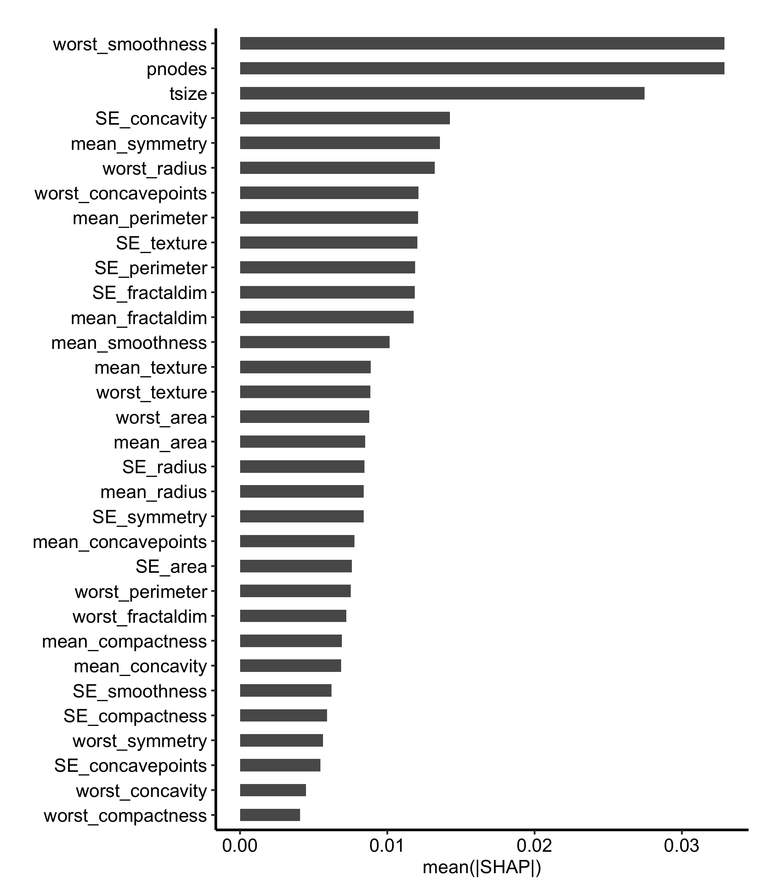

The variable importance chapter ranked predictors by permutation importance: shuffle a variable among the out-of-bag patients, see how much worse the forest predicts, and the size of that drop is the variable’s importance. One number per variable, and it is a statement about the forest. VIMP answers “what is this model built on?”
Then a different question arrives, usually from a clinician looking at one patient’s chart: this patient scored high, why? VIMP has nothing to say. It has no per-patient parts to it.
SHAP does. Think of a SHAP attribution as an itemized receipt for a single prediction. Start from the baseline, what the forest predicts about a patient it knows nothing about, then credit or debit each variable with the amount it moved that patient’s prediction, and the line items add back up to the score the patient actually got. Every patient gets their own receipt, so a variable that lifts one patient’s prediction can pull another’s down.
So reach for VIMP when the question is about the model and SHAP when it is about the individual. The two are not symmetric, which is worth knowing before you pick: average the SHAP receipts over patients and you get a ranking that reads a lot like VIMP, but you cannot go the other way and recover a patient from a VIMP bar.
Four views in this part get called “variable importance” in conversation, and they answer four different questions. Keep them apart before you pick one:
VIMP and varPro both rank; SHAP and dependence both describe. The split that matters runs the other way, though. VIMP and varPro are statements about the model, SHAP is a statement about a patient, and dependence is a statement about a predictor. Picking the wrong one is how a results figure ends up answering a question nobody asked.
gg_shap(), from ggRandomForests (Ehrlinger 2026), computes those attributions using the kernelshap package (Mayer and Watson 2025) and hands back one row per observation per variable. Three renderers draw it: shap_importance() for the cohort ranking, shap_beeswarm() for the per-patient spread behind that ranking, and shap_dependence() for one variable across its range. As everywhere else in this part, each returns a bare ggplot you finish with a house theme and the usual +.
29.2 The data it needs
A fitted rfsrc object, with one restriction that shapes the rest of this chapter: gg_shap() supports regression and classification forests. The pbc survival fit the other recipes in this part lean on will not work here, and handing one over gets you an error naming the family rather than a plot.
So we switch to breast, the Wisconsin breast cancer data that ships with randomForestSRC and that both varPro chapters use: 32 predictors, thirty features read off the digitized image of a fine needle aspirate plus tumour size and the count of positive nodes, and a two-level outcome, N for nonrecurrence and R for recurrence.
One difference from those chapters is worth stating rather than leaving in the code. They fit breast as it ships; we drop its four incomplete rows with na.omit() first, taking 198 patients down to 194. The fit is not what needs this, since rfsrc() handles the missing values either way. It is newdata that needs it. Hand gg_shap() a row carrying a missing predictor and the attribution stops with no records in the NA-processed data, an error raised downstream in randomForestSRC rather than anywhere you were looking. Dropping the four rows once, up front, keeps that out of the way.
set.seed(42)data(breast, package ="randomForestSRC")dta <-na.omit(breast)rf <-rfsrc(status ~ ., data = dta, ntree =200)# newdata must carry predictors only -- see Pitfallsnd <- dta[1:20, setdiff(names(dta), "status"), drop =FALSE]gs <-gg_shap(rf, newdata = nd, bg_n =20)dim(gs)
[1] 640 5
Two arguments set both the cost and the meaning. newdata holds the patients you want explained, twenty of them here, and bg_n is the size of the background sample drawn from the training data that each attribution is measured against. Twenty patients times 32 predictors is the 640 rows that come back, one attribution apiece.
Because this is a classification forest, the attributions are on the predicted probability of a single class, and which.class = 1 picks the first one. Here that is N, so everything below reads as movement in the predicted probability of nonrecurrence. Pass which.class = 2 to explain recurrence instead.
29.3 Build it
shap_importance() collapses the receipts into a ranking. It takes the mean absolute attribution for each variable across the explained patients and draws the bars sorted, which gives you the SHAP counterpart to the VIMP figure in the variable importance chapter. Thirty-two bars need the vertical room, so this chunk sets fig-height: 8; leave it at the book default and the labels run into each other.
shap_importance(gs) +theme_hv_manuscript()

Figure 29.1: Global SHAP importance for the breast classification forest, ranking predictors by mean absolute attribution across the explained observations
Three bars separate from the pack, each about twice the fourth, and only two of them are what you would expect. Tumour size and positive nodes are the staging measurements rather than the image panel, which is a reassuring place for a breast recurrence model to land. The third, worst_smoothness, is one of the thirty image features, and it ties pnodes for the top bar: the two means agree to five decimal places on twenty patients. So read the top of this ranking as a group of three rather than a first, second, and third, and check for a tie like that one before you tell a co-author which variable came out on top.
The scale needs care too. This is a probability, so a bar at 0.03 says the variable moved the predicted probability of nonrecurrence by about three percentage points on average, in one direction or the other. Absolute value is doing work in that sentence, and it is exactly what the next figure takes back apart.
29.4 Read it
The mean absolute value that builds the ranking throws away two things a clinician will ask about: the sign, and whether every patient looks alike. shap_beeswarm() puts both back by plotting all 640 attributions, one point per patient per variable.
Colour carries half of what this plot says, so the key has to survive the theme. theme_hv_manuscript() sets legend.position = "none", which is the right default for the single-series figures elsewhere in the book and wrong here. Whatever you hand the theme in ... is applied after its own settings, so theme_hv_manuscript(legend.position = "right") puts the key back. Same ordering rule as the legends chapter: what runs last wins.
Figure 29.2: The per-observation attributions behind that ranking, one point per patient per variable, showing the spread a mean absolute value hides
The plot encodes two variables at once, and getting them straight is the whole skill of reading it:
Horizontal position is the attribution. Right of the dashed zero line, the variable pushed that patient toward nonrecurrence; left of it, away. Distance from the line is how hard it pushed.
Colour is the patient’s own value of that variable, rescaled low to high within each row. The legend reads Low to High, not in the variable’s units, because each row is on its own scale.
The two together give you direction. A row that runs high-value on the left and low-value on the right means the variable pushes the prediction down as it increases. That is what the top rows here do: patients with larger tumours and more involved nodes sit left of zero, away from nonrecurrence. A row where colour is scattered with no left-right order is the interesting case, since it means the variable’s effect depends on what else the patient has.
The width of a row is heterogeneity. A tight row acts on everyone the same way. A row that spreads wide is the forest treating patients differently, and that spread is precisely what the importance bar averaged away.
One caution when you export this figure. Twenty patients is a thin beeswarm, and a row can look structured on twenty points and dissolve on two hundred. Read the direction, not the individual points.
29.5 Variations
29.5.1 Show only the top predictors
Thirty-two bars is a supplement, not a results figure. shap_importance() has no nvar argument, so the trimming happens to the data rather than to the plot. gg_shap() returns vars as a factor ordered by mean absolute attribution with the most important level last, so the top ten are the last ten levels. droplevels() is the part that is easy to forget: leave the unused levels on and the trimmed variables keep their slots on the axis as empty rows.
Figure 29.3: The same SHAP ranking restricted to the top ten predictors, the version that goes in a results figure
Ten is the same cut the variable importance chapter makes, for the same reason: it puts the eye on the predictors that matter and leaves the full ranking available as a supplement.
29.5.2 One variable across its range
The beeswarm compresses each variable into a strip. shap_dependence() pulls one variable back out and plots each patient’s attribution against their own value of it, which is the closest SHAP gets to a partial dependence curve, built per patient rather than per grid point.
Figure 29.4: SHAP dependence for pnodes, plotting each patient’s attribution against their own number of positive nodes
The trend is clear and it runs downward. The eleven node-negative patients sit at or just above zero, nodal status nudging their predicted probability of nonrecurrence up, and the four patients with five or more involved nodes drop to between -0.04 and -0.11, pulling it down by four to eleven percentage points. The vertical spread among those eleven patients at zero nodes is the part a partial dependence curve would have averaged away: the same nodal status is worth a different amount to different patients, depending on what else is in their record.
Read the direction, not the shape. Four patients carry the whole right-hand side of this panel, so nothing about the curvature between five and twenty nodes is worth interpreting.
Not every variable comes back this way. Ask for mean_radius, nineteenth in the ranking, and the attributions scatter inside a couple of percentage points of zero with no trend against radius at all. That is an answer rather than a failed plot: on these patients, this forest was not using radius, which is consistent with where it sits in the ranking. Leave xvar off entirely and you get the top-ranked variable by default.
For a factor predictor the same function draws boxplots by level instead of a scatter, so the call does not change when the variable does.
29.6 Pitfalls
newdata must hold predictors only. Pass the fitted data frame whole, outcome column and all, and the call fails deep inside kernelshap with all(colnames(X) %in% colnames(bg_X)) is not TRUE, an error that names neither newdata nor the offending column. The fix is the setdiff(names(dta), "status") in the fit chunk above: drop the outcome, keep everything else.
Cost scales with nrow(newdata) times bg_n. On this 32-predictor fit, twenty patients against a twenty-row background takes roughly 48 seconds; thirty against thirty takes roughly 99. Both arguments are levers, but they are not the same lever. Shrinking newdata explains fewer patients, while shrinking bg_n makes every attribution noisier, since the background is the reference the attribution is measured against. Cut newdata first, and keep bg_n as large as your patience allows.
Attribution is not causation. A large SHAP value says the forest leaned on that variable for that patient. It does not say the variable caused the outcome, and it does not survive a change of model. Two correlated predictors will split their attributions the same way they split VIMP, so a variable can look quiet simply because a collinear partner absorbed the credit. Present SHAP as an explanation of the model, which is all it is, not as an effect estimate.